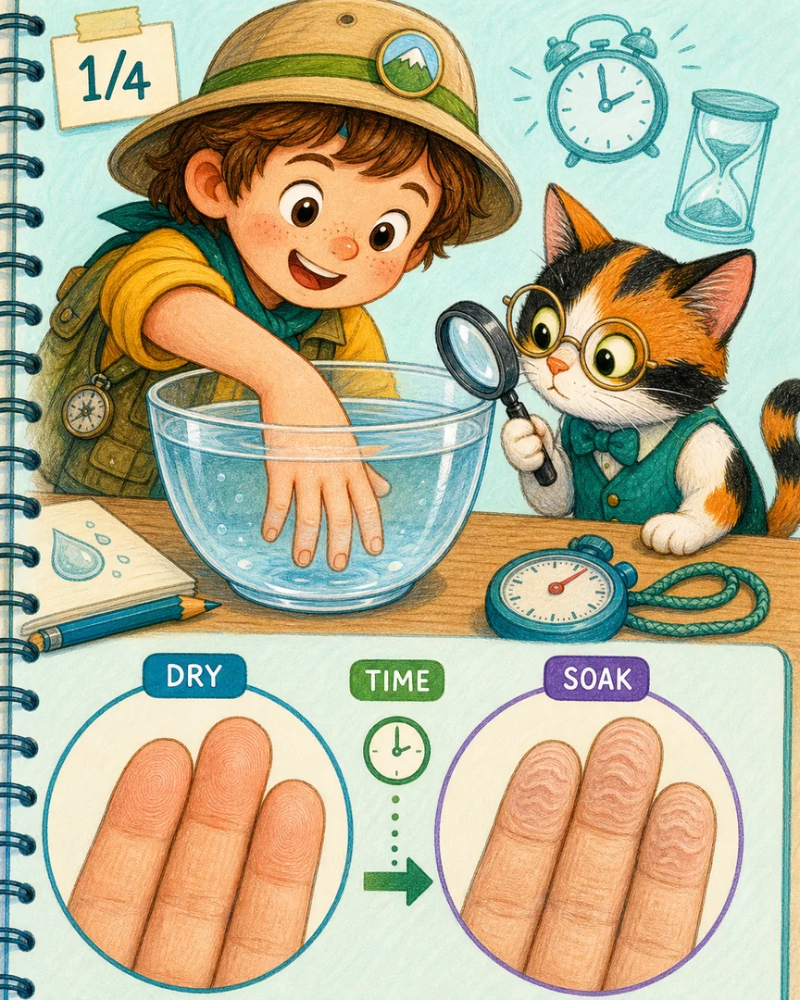
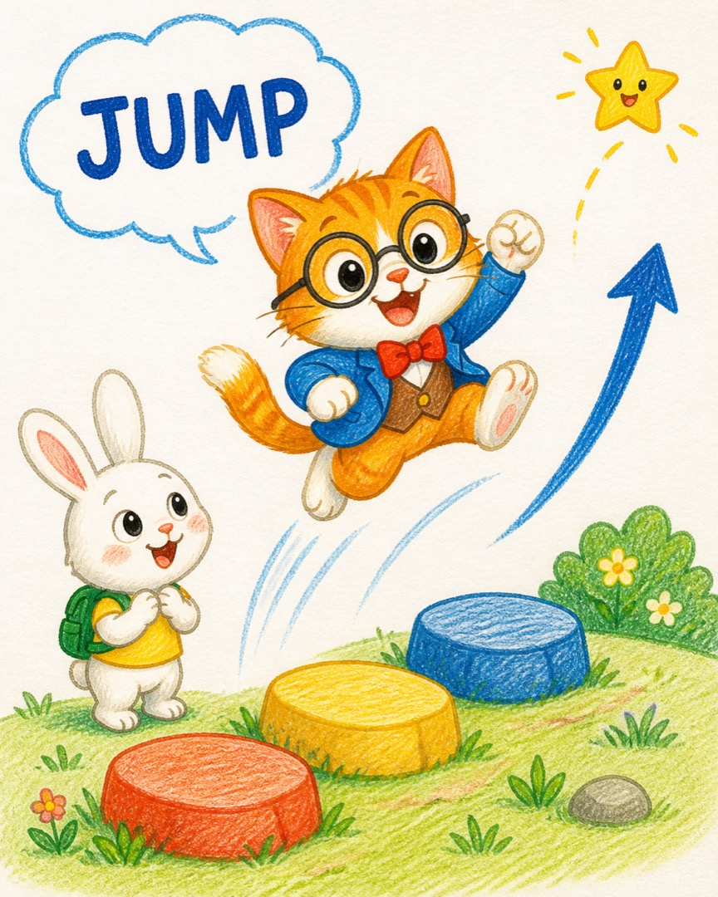
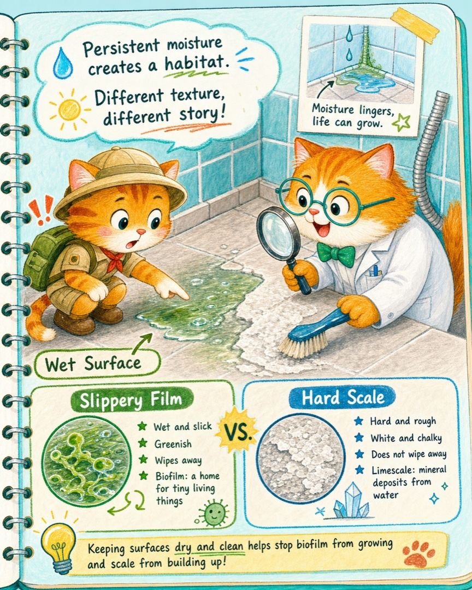
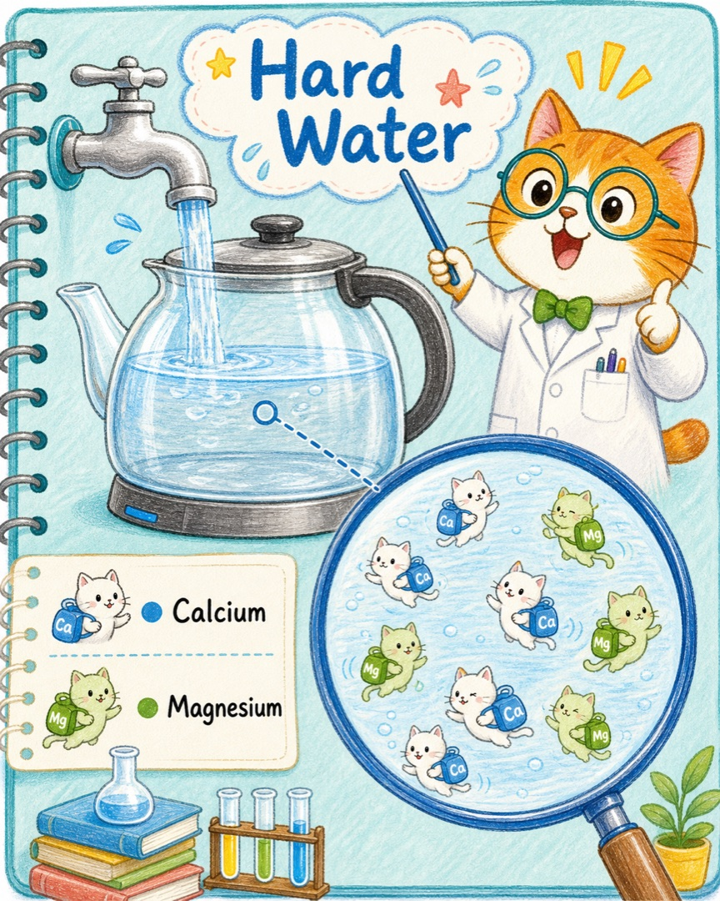
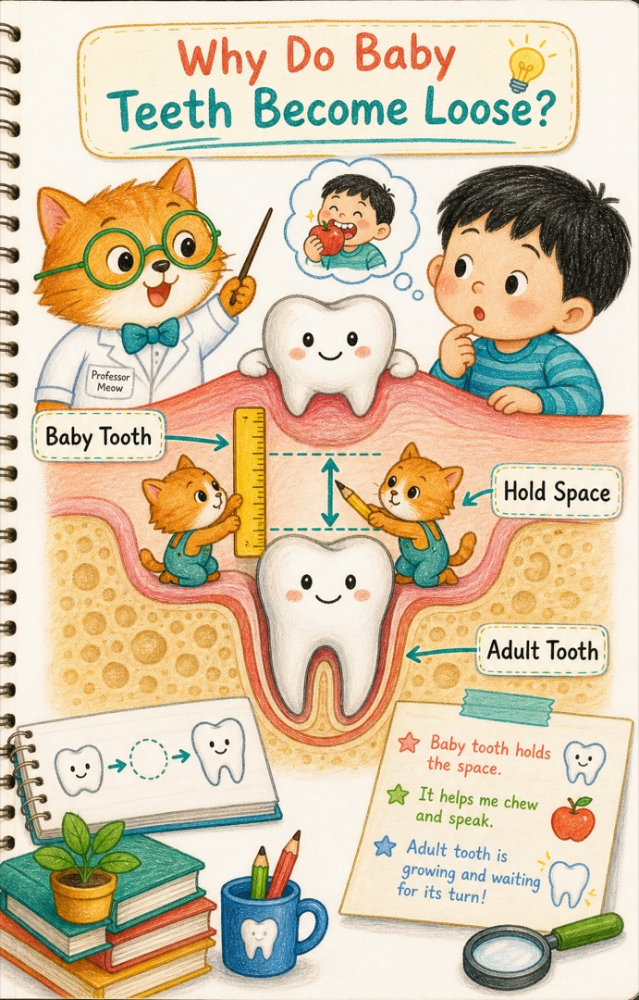
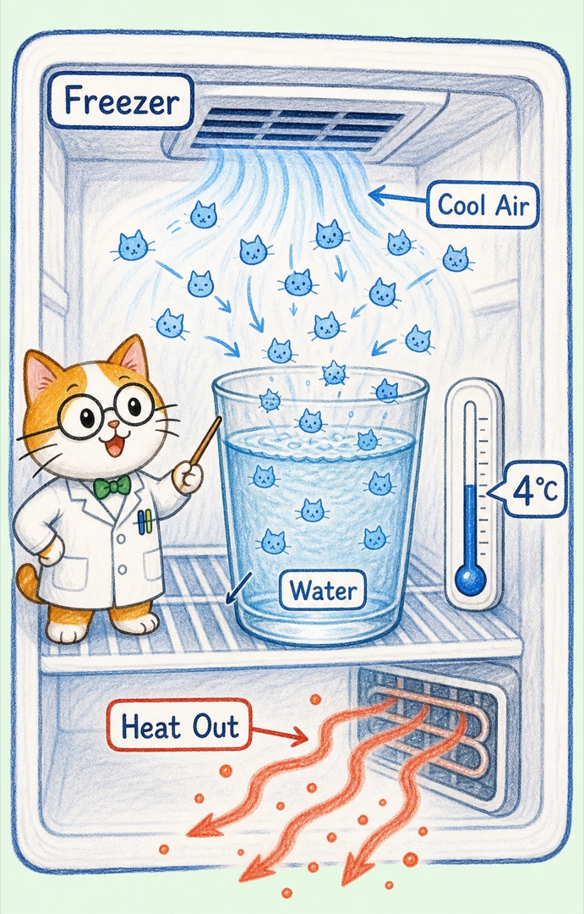
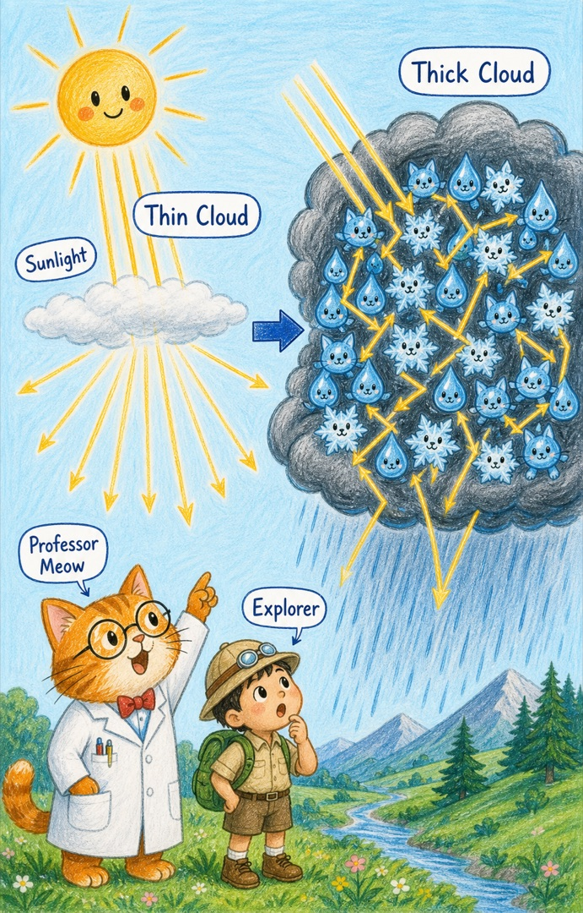

Professor Meow Archive
喵博士语录馆
把一个个“不毛茸茸”的概念，翻译成小猫宇宙里的温暖真理。

手放在水里泡太久，为什么会发皱？
神经请指尖血管收窄，变小的指腹把外层皮肤折成一道道小沟。
已收录
兔兔的三个动作英文
让身体先动起来，JUMP、SWIM、FLY 三只英文动作猫就会从记忆里跑出来。
已收录
浴室里黏黏滑滑的绿膜是什么？
它通常叫生物膜：微生物在潮湿表面铺出黏性基质，有藻类参与时还可能变绿。
已收录
水垢是怎么产生的？有什么危害？
水中的钙镁矿物在加热和蒸发后抱团结晶，留下不毒却会妨碍设备工作的硬壳。
已收录
为什么要拔乳牙？
乳牙负责守住位置；当自然换班卡住、牙齿生病或受伤时，牙医才会帮恒牙让出安全通道。
已收录
明明刮的是皮肤，肚子里的痛为什么跟着屁跑掉了？
热、药物、休息、触碰和排气接连发生；喵博士教我们区分亲眼观察与确定因果。
已收录
刮痧后，皮肤为什么会从红变紫？
红色来自繁忙的血管公路，紫色来自跑到血管外的红细胞；热猫可能参与，却不是唯一旋钮。
已收录
手机为什么会发光
电池能量、屏幕像素、红绿蓝小灯和亮度控制一起合作的光之小猫城。
已收录
游泳为什么能浮在水上不沉下去
身体挤开水，小水猫往上托；放松、吸气和划水让漂浮更稳。
已收录
味道为什么会自己跑出来
爷爷带来的酒味从瓶子里散开，像一群看不见的小味道跑进大家鼻子里。
已收录
爷爷的酒味为什么会跑遍整个房间
没有队长的味道小猫随机碰撞、扩散，再被鼻子送成大脑里的气味消息。
已收录
台风天之后，最高的秋葵为什么倒了
风借了秋葵的高度，雨削弱了根，重力接住了最后的倾斜。
已收录
冰箱里的水为什么会冻成冰块？
冰箱带走热量，水分子慢下来并排成晶格，流动的水就长成了可以握住的冰块。
已收录
乌云为什么是乌的？
厚密的云把阳光拨向四面八方，云底收到的光变少，我们便看见了乌云。
已收录